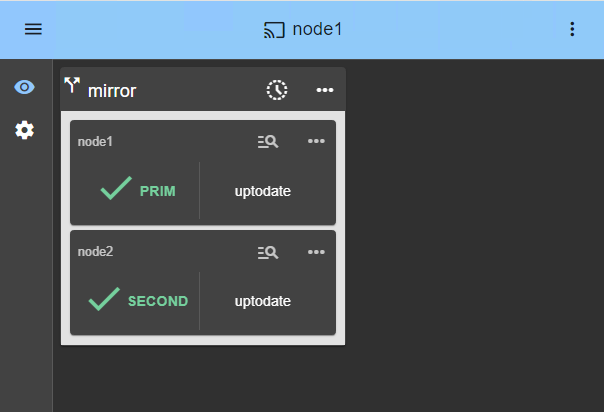

La solution la plus simple pour la haute disponibilité SQL de Genetec : réplication synchrone à 2 nœuds et basculement
Fonctionnement du cluster miroir SANless SafeKit avec Genetec SQL
SafeKit pour Genetec SQL offre une Haute Disponibilité transparente tout en réduisant considérablement le TCO (Coût Total de Possession). En éliminant les coûts matériels et opérationnels du clustering traditionnel, SafeKit propose une alternative HA légère à 2 nœuds face aux solutions de clustering complexes.
- Continuité d’activité tout-en-un : Une solution complète fournissant une IP virtuelle , un Basculement automatique , un Retour automatique après panne et une Réplication en temps réel dans un seul package intégré.
- Réplication synchrone (Zéro perte de données) : Assurez une intégrité absolue des données pour les applications transactionnelles grâce à la réplication synchrone, garantissant 0 perte de données en cas de défaillance.
- Protection flexible au niveau du fichier : SafeKit effectue une réplication logicielle au niveau du fichier, totalement transparente pour l’application. Elle protège non seulement les bases de données, mais aussi tous les dossiers et données associés. Vous pouvez répliquer les dossiers existants là où ils sont installés, même sur le disque système.
- Déploiement simplifié (Sans AD/LDAP) : Contrairement aux clusters traditionnels, il n’y a pas besoin de configurer d’annuaire AD/LDAP , ce qui supprime les contraintes d’installation complexes et les dépendances d’infrastructure.
- Zéro investissement SAN pour la HA : Obtenez une redondance complète grâce à une architecture sans partage de ressources (shared-nothing). Elle fonctionne avec des disques locaux standards, éliminant le besoin de matériel SAN coûteux, de commutateurs Fiber Channel et de maintenance de stockage spécialisée.
- Efficacité réelle à 2 nœuds : Alors que la plupart des solutions nécessitent un troisième nœud « témoin » (witness) pour éviter le split-brain, SafeKit offre un cluster robuste à 2 nœuds , permettant d’économiser 33 % sur le matériel, l’énergie et l’espace en rack.
- Redondance indépendante du matériel : Évitez la dépendance vis-à-vis d’un fournisseur (vendor lock-in). Construisez votre cluster de Haute Disponibilité en utilisant n’importe quelle marque de serveur ou type de stockage interne, prolongeant ainsi le cycle de vie du matériel existant et réduisant les coûts de remplacement.
- Licence au coût prévisible : SafeKit assure la Haute Disponibilité via une licence perpétuelle unique, garantissant une budgétisation prévisible et éliminant le risque de hausses de prix annuelles.
En regroupant la Haute Disponibilité dans une couche logicielle légère, SafeKit offre une redondance et une continuité d’activité de classe entreprise pour Genetec SQL à une fraction du coût des suites de clustering traditionnelles.

Cluster miroir SafeKit HA pour Genetec SQL
⚡ Guide d’installation rapide d’un cluster miroir pour Genetec SQL >
Table des matières
- Comment le logiciel SafeKit implémente-t-il simplement un cluster de haute disponibilité sans SAN pour Genetec SQL ?
- Comment le cluster miroir SafeKit fonctionne-t-il avec Genetec SQL ?
- Comparatif : SafeKit pour Genetec SQL vs. Autres solutions de clustering
- Guide vidéo : Configuration d’un cluster miroir SafeKit HA
- 🔍 Hub de navigation Haute Disponibilité SafeKit
Comment le logiciel SafeKit implémente-t-il simplement un cluster de haute disponibilité sans SAN pour Genetec SQL ?
Qu’est-ce que la solution SafeKit Mirror HA pour Genetec SQL ?
SafeKit apporte la haute disponibilité à Genetec SQL entre deux serveurs de n’importe quelle marque.
Cet article explique comment implémenter rapidement un cluster Genetec SQL sans stockage partagé sur un SAN et sans compétences spécifiques.
Le principe de la solution est de définir les dossiers où résident les données de l’application Genetec SQL , ses services, une IP virtuelle et des modules de surveillance (checkers).
SafeKit implémente ensuite la réplication en temps réel et le basculement automatique pour garantir la disponibilité continue du service.
Pourquoi choisir une solution HA tout-en-un unifiée plutôt que des outils fragmentés ?
Contrairement aux solutions « d’appoint » qui combinent des produits distincts pour la réplication et le clustering, SafeKit intègre l’IP virtuelle, le basculement automatique, le retour automatique après panne et la réplication de fichiers en temps réel au sein d’un seul et unique moteur.
Cela élimine le risque d’un « château de cartes » où les mises à jour de l’OS brisent les liens fragiles entre des outils disparates, offre un point de responsabilité unique pour l’ensemble de la pile HA, et réduit les erreurs humaines en fournissant une interface unique pour la HA de Genetec SQL.
Dois-je choisir la haute disponibilité au niveau applicatif ou au niveau de la machine virtuelle (VM) ?
Avec SafeKit, vous disposez de la flexibilité nécessaire pour choisir le modèle de redondance qui correspond à vos besoins.
La redondance au niveau de la VM (pour Hyper-V ou KVM) est la plus simple à mettre en œuvre car elle réplique l’intégralité de la machine virtuelle, sans nécessiter de connaissances sur l’application interne.
À l’inverse, la redondance au niveau applicatif est plus granulaire ; elle réplique uniquement des dossiers de données spécifiques et redémarre les services de l’application plutôt que l’ensemble du système d’exploitation.
Bien que la HA au niveau de la VM soit plus facile à configurer, la HA au niveau applicatif est indépendante de l’hyperviseur et peut s’exécuter sur des environnements physiques, virtuels ou cloud.
Quels sont les avantages distinctifs de la haute disponibilité SafeKit pour Genetec SQL par rapport aux concurrents ?
SafeKit se différencie des clusters traditionnels pour Genetec SQL grâce à son architecture sans partage de ressources (shared-nothing) et son déploiement simplifié. Alors que la plupart des solutions d’entreprise nécessitent un déploiement de réplication complexe ou un stockage SAN coûteux, SafeKit offre :
- Réplication synchrone avec zéro perte de données : SafeKit implémente une réplication 100 % synchrone, garantissant une intégrité totale des données pour les applications transactionnelles. En cas de défaillance, il n’y a aucune perte de données (RPO=0). De plus, SafeKit est capable de répliquer non seulement les bases de données de Genetec SQL, mais aussi tous les autres dossiers de données (journaux, fichiers de configuration, etc.), assurant ainsi le miroir complet de tout l’environnement.
- Clustering simplifié à 2 nœuds : Contrairement aux clusters standards qui nécessitent souvent un « témoin » (un 3e nœud, disque ou partage de fichiers) pour maintenir un quorum, SafeKit offre une haute disponibilité complète avec seulement deux serveurs redondants, réduisant ainsi les coûts et la complexité de l’infrastructure.
En savoir plus sur notre mécanisme de heartbeat et de quorum. - Gestion unifiée : Les administrateurs peuvent gérer le basculement de Genetec SQL, la réplication des données et la supervision via une console SafeKit unique. Cela rend la haute disponibilité accessible aux équipes sans expertise spécialisée en administration de cluster.
- Modules de surveillance personnalisés (Checkers) : SafeKit va au-delà de la simple surveillance des services de base ; il propose des checkers pour surveiller l’état de santé du processus de Genetec SQL. Le système est hautement extensible, permettant l’ajout de checkers personnalisés adaptés à votre environnement.
Comment SafeKit réduit-il le TCO (Coût Total de Possession) pour Genetec SQL par rapport au clustering standard ?
Contrairement aux solutions de haute disponibilité traditionnelles, SafeKit est conçu pour fonctionner avec un surcoût d’infrastructure minimal , sans aucun compromis sur la fiabilité. Les principales économies par rapport à un cluster de basculement traditionnel comprennent :
- Zéro coût de stockage : SafeKit utilise une architecture sans partage de ressources (shared-nothing) qui fonctionne avec des disques locaux. Cela élimine le besoin de matériel SAN coûteux, de réseaux iSCSI ou de configurations vSAN complexes.
- Aucune édition Enterprise requise : Alors que les mécanismes de réplication natifs peuvent nécessiter des licences Enterprise onéreuses, SafeKit n’a pas besoin de l’édition Enterprise. Il fonctionne parfaitement avec l’édition standard et même avec la version gratuite , offrant une disponibilité haut de gamme pour une fraction du prix.
- Efficacité réelle à 2 nœuds : Contrairement aux clusters standards qui nécessitent souvent un « témoin » (un 3e nœud, un disque ou un partage de fichiers) pour maintenir un quorum, SafeKit offre une haute disponibilité complète avec seulement deux serveurs redondants.
- Pas d’abonnements forcés : SafeKit propose une licence perpétuelle. Vous êtes propriétaire de votre logiciel, ce qui vous évite le « piège de l’abonnement » et les hausses de prix annuelles imprévisibles, courantes avec les modèles modernes basés uniquement sur le cloud ou sur abonnement.
- Faibles dépenses opérationnelles (OPEX) : En tant que solution plug-and-play, elle ne nécessite aucune formation spécialisée ni recours à des consultants externes coûteux pour la maintenance, contrairement aux outils de clustering open-source complexes.
- Tarification indépendante du processeur : L’octroi de licences est indépendant du nombre de processeurs ou de cœurs. Avec seulement deux licences pour deux nœuds, vous pouvez protéger Genetec SQL contre les pannes.
Est-il possible de mettre en place un cluster miroir Genetec SQL sans compétences en clustering ?
Oui. Cet article explique comment implémenter rapidement un cluster miroir Genetec SQL sans avoir besoin d’une gestion SAN spécialisée ou de compétences complexes en clustering de haute disponibilité (HA). En utilisant les scripts de basculement automatisés de SafeKit pour gérer la réplication et le redémarrage de Genetec SQL , vous bénéficiez d’une solution de redondance robuste, nettement plus simple à déployer et à maintenir que les solutions de clustering traditionnelles.
Au-delà de Genetec SQL, quels types d’applications et d’environnements SafeKit peut-il protéger ?
SafeKit est une solution de haute disponibilité polyvalente compatible à la fois avec Windows et Linux. Elle permet une réplication synchrone en temps réel et un basculement automatique pour un large éventail de charges de travail critiques, notamment :
- Environnements virtuels et physiques : des machines virtuelles complètes sous Hyper-V ou KVM.
- Orchestration de conteneurs : des environnements Docker, Podman et K3s (Kubernetes).
- Données et services : des répertoires de fichiers individuels, des services et diverses bases de données.
- Infrastructures Cloud : la haute disponibilité pour les applications Cloud.
SafeKit propose également des clusters de type “Farm” avec des fonctionnalités natives de répartition de charge réseau et de basculement (Network Load Balancing and Failover) pour les applications sans état (stateless) telles que les serveurs Web.
💡 Explorez la liste complète des solutions de haute disponibilité supportées ici.
Comment fonctionne le cluster miroir SafeKit avec Genetec SQL ?
Étape 1. Réplication en temps réel
Le serveur 1 (PRIM) exécute l’application Genetec SQL. Les clients sont connectés à une adresse IP virtuelle. SafeKit réplique en temps réel via le réseau les modifications apportées à l’intérieur des fichiers.

La réplication est synchrone, sans perte de données en cas de panne, contrairement à la réplication asynchrone.
Il vous suffit de configurer les noms des répertoires à répliquer dans SafeKit. Il n’y a aucun prérequis sur l’organisation des disques. Les répertoires peuvent être situés sur le disque système.
Étape 2. Basculement automatique
En cas de panne du serveur 1, le serveur 2 prend le relais (failover). SafeKit bascule l’adresse IP virtuelle et redémarre automatiquement l’application Genetec SQL sur le serveur 2.
L’application retrouve sur le serveur 2 des fichiers à jour répliqués par SafeKit. L’application continue de s’exécuter sur le serveur 2 en modifiant localement ses fichiers, qui ne sont alors plus répliqués vers le serveur 1.

Le temps de basculement est égal au temps de détection de la panne (30 secondes par défaut) plus le temps de démarrage de l’application.
Étape 3. Retour automatique après panne
Le retour après panne (failback) consiste à redémarrer le serveur 1 après avoir résolu le problème qui a causé sa défaillance.
SafeKit resynchronise automatiquement les fichiers, en mettant à jour uniquement les fichiers modifiés sur le serveur 2 pendant que le serveur 1 était arrêté.

Le retour après panne se déroule sans perturber l’application Genetec SQL, qui peut continuer à s’exécuter sur le serveur 2.
Étape 4. Retour à la normale
Après la réintégration, les fichiers repassent en mode miroir, comme à l’étape 1. Le système se retrouve en mode haute disponibilité, avec l’application Genetec SQL s’exécutant sur le serveur 2 et SafeKit répliquant les mises à jour de fichiers vers le serveur 1.

Si l’administrateur souhaite que l’application s’exécute sur le serveur 1, cela peut être fait manuellement via la console web au moment opportun, ou automatiquement par configuration.
Comment configurer un cluster miroir SafeKit pour Genetec SQL ?

La console web SafeKit offre une interface intuitive pour orchestrer la haute disponibilité de vos applications critiques. En quelques étapes seulement, vous pouvez configurer un cluster miroir SafeKit pour garantir la continuité d’activité :
- Basculement d’application (onglet Macros) : définissez les services applicatifs spécifiques à redémarrer automatiquement en cas de défaillance.
- Réseau(x) de heartbeat : canal(aux) de communication dédié(s) utilisé(s) par les nœuds du cluster pour surveiller mutuellement leur état de santé et leur disponibilité en continu, et pour synchroniser les décisions de basculement.
- Gestion de l’IP virtuelle : configurez l’adresse IP virtuelle (VIP) pour une reconnexion transparente des clients après un basculement.
- Réplication en temps réel : sélectionnez les répertoires critiques pour une réplication synchrone au niveau octet, basée sur l’hôte.
- Checkers (Vérificateurs) : surveillez l’état de santé de l’application et déclenchez une récupération automatique si une défaillance de processus est détectée.
Le cluster SafeKit inclut un vérificateur de split-brain dédié pour résoudre les problèmes d’isolement réseau sans nécessiter de troisième machine témoin (witness) ou de réseau de heartbeat supplémentaire. En savoir plus sur le heartbeat, le basculement et le quorum dans un cluster.
Comment surveiller un cluster miroir SafeKit pour Genetec SQL ?

La console de gestion SafeKit offre une vue unifiée de votre infrastructure de haute disponibilité. Elle permet aux administrateurs de surveiller l’état opérationnel du cluster et de suivre la synchronisation des données en temps réel.
Pour un cluster miroir à 2 nœuds, la console affiche clairement les rôles de chaque serveur :
- PRIM (Primary) : le nœud actif qui exécute actuellement l’application et gère l’IP virtuelle. Il effectue les écritures sur le stockage local et la réplication en temps réel vers le nœud secondaire.
- SECOND (Secondary) : le nœud en veille (standby) qui reçoit les mises à jour synchrones au niveau octet. Il est prêt à prendre le relais instantanément en cas de défaillance du Primaire.
- État ALONE : vous alerte visuellement lorsque le cluster fonctionne sur un seul nœud (par exemple, pendant une maintenance ou après une panne), indiquant que la redondance est temporairement perdue.
- Progression de la resynchronisation : lorsqu’un nœud défaillant récupère, son état passe à l’orange pendant la réintégration des données en arrière-plan, garantissant l’absence de temps d’arrêt pendant la phase de « retour à la normale ».
Au-delà des simples icônes d’état, l’interface permet une orchestration du basculement en un clic , vous donnant la possibilité de réassigner manuellement le rôle primaire pour une maintenance planifiée tout en assurant une disponibilité continue pour l’activité des utilisateurs.
Comparaison : SafeKit pour Genetec SQL vs Autres Solutions de Clustering
| Fonctionnalité | SafeKit pour Genetec SQL | Clustering de Basculement avec Stockage Partagé | Réplication de Base de Données |
|---|---|---|---|
| Architecture | SANless (Shared-Nothing) | Stockage Partagé (SAN/NAS) | Shared-Nothing |
| Reconfiguration de l’Application | Aucune (Exécution sur place) | Requise (Déplacement des données vers le disque partagé) | Aucune |
| Périmètre de Réplication | Application Complète (BD + Config + Logs) | Données du Disque Partagé | Données de la Base de Données Uniquement |
| Type de Réplication | Synchrone (RPO Zéro) | Synchrone (via SAN) | Dépend des Éditions (Souvent Asynchrone) |
| Logique de Basculement / Retour de Ressource | Entièrement Automatique | Entièrement Automatique | Souvent Manuelle ou Complexe |
| Dépendance AD/LDAP | Indépendant (Pas d’AD requis) | Requis sur Windows (Active Directory) | Indépendant |
| Complexité du Déploiement | Faible (< 30 Minutes) | Élevée (AD, Stockage, Quorum) | Moyenne (Réplication Uniquement, Pas de Basculement) |
Pour résumé , en éliminant le besoin d’un SAN et en simplifiant le déploiement — en supprimant les dépendances telles qu’Active Directory et les configurations de Quorum spécialisées — SafeKit offre une alternative HA légère et indépendante du matériel. Cela se traduit par un TCO considérablement réduit tout en garantissant que votre environnement Genetec SQL reste résilient, avec une perte de données nulle et une reprise automatisée.
Guide vidéo : Configuration d’un cluster miroir HA SafeKit
Vidéo SafeKit : Clustering au niveau applicatif (8:47)
Dans cette vidéo, découvrez comment SafeKit implémente un cluster HA miroir sans la complexité d’un SAN. Bien que cette démonstration utilise Microsoft SQL Server, la solution fonctionne de manière identique pour d’autres bases de données et applications.
Chapitres
- 🎬 2 nœuds avec SQL Server (0:32)
- 🎬 Configurer le cluster et le module mirror.safe (3:58)
- 🎬 Démarrer et tester la réplication SQL, la migration, le basculement sur panne (4:17)
Mise en œuvre étape par étape
- 🛠️ Lire le guide de configuration d’un cluster miroir sur Windows
- 🛠️ Lire le guide de configuration d’un cluster miroir sur Linux
SafeKit, une solution reconnue sur le marché de la sécurité
Milestone a choisi SafeKit
SafeKit est déployé dans plus de 30 pays avec le logiciel de gestion vidéo de Milestone.
SafeKit est validé par Milestone pour la redondance et la haute disponibilité du serveur de management.
SafeKit est la meilleure solution car elle est purement logicielle, totalement indépendante du matériel.
Solution préférée par Siemens
SafeKit est disponible dans le marketplace Siemens avec la 💡 suite Siveillance (vidéo et contrôle d’accès) et avec ses logiciels SCADA : 💡 Desigo CC (gestion technique du bâtiment), 💡 SIMATIC WinCC, 💡 SIMATIC PCS 7.
SafeKit est déployé par Siemens en Australie, en France, aux Pays-Bas, au Qatar, en Suisse, aux Émirats arabes unis, au Royaume-Uni et aux États-Unis.
SafeKit recommandé par Nedap
Nedap, un acteur clé du contrôle d’accès physique, recommande SafeKit pour la redondance et la haute disponibilité de son application AEOS.
La 💡 solution Nedap/SafeKit est disponible avec un essai gratuit et un guide d’installation rapide.
TIL Technologies a choisi SafeKit
SafeKit est déployé dans plus de 100 sites clients par TIL Technologies pour le contrôle d’accès et la gestion des bâtiments.
SafeKit est l’option de haute disponibilité de MICROSESAME.
Prix de l’innovation dans les logiciels de gestion vidéo
Les lecteurs de Benchmark Magazine (spécialisé dans les systèmes de sécurité physique pour revendeurs & SI) ont voté pour SafeKit comme une innovation dans les logiciels de gestion vidéo.
Ce prix montre l’importance de la redondance dans les offres de sécurité.
🔍 SafeKit Hub de navigation haute disponibilité
** Explorez SafeKit : Fonctionnalités, vidéos techniques, documentation et essai gratuit **
| Type de ressource | Description | Lien direct |
|---|---|---|
| Caractéristiques principales | Pourquoi choisir SafeKit pour une haute disponibilité simple et économique ? | Découvrez pourquoi choisir SafeKit pour une haute disponibilité |
| Cas d’utilisation | Découvrez comment SafeKit garantit la haute disponibilité des infrastructures critiques | Voir tous les cas d’utilisation (logiciels OEM, serveurs Edge, SCADA, etc.) |
| Modèle de déploiement | disponibilité tout-en-un sans SAN : Clustering logiciel sans partage | Voir SafeKit disponibilité tout-en-un sans SAN |
| Stratégies de haute disponibilité | SafeKit : Haute disponibilité de l’infrastructure (VM) vs. Haute disponibilité applicative | Voir SafeKit Haute disponibilité et redondance : VM vs. niveau applicatif |
| Spécifications techniques | Limitations techniques pour SafeKit Clustering | Voir SafeKit Limitations de haute disponibilité |
| Vidéos | SafeKit : Démonstrations de configuration haute disponibilité et de basculement | Voir SafeKit Tutoriels de basculement |
| Architecture | Fonctionnement du cluster SafeKit Mirror (Réplication en temps réel et basculement) |
Voir SafeKit Mirror Cluster : Réplication en temps réel et basculement |
| Architecture | Fonctionnement du cluster SafeKit Farm (Équilibrage de charge réseau et basculement) | Voir SafeKit Farm Cluster : Équilibrage de charge réseau et basculement |
| Avantages concurrentiels | Comparaison : SafeKit vs. Clusters haute disponibilité (HA) traditionnels | Voir SafeKit Comparaison avec les clusters HA traditionnels |
| Ressources techniques | SafeKit Haute disponibilité : documentation, téléchargements et essai | Voir SafeKit Essai gratuit et documentation technique HA |
| Solutions préconfigurées | SafeKit Bibliothèque de modules d’application : Solutions HA prêtes à l’emploi | Voir SafeKit Modules d’application haute disponibilité |